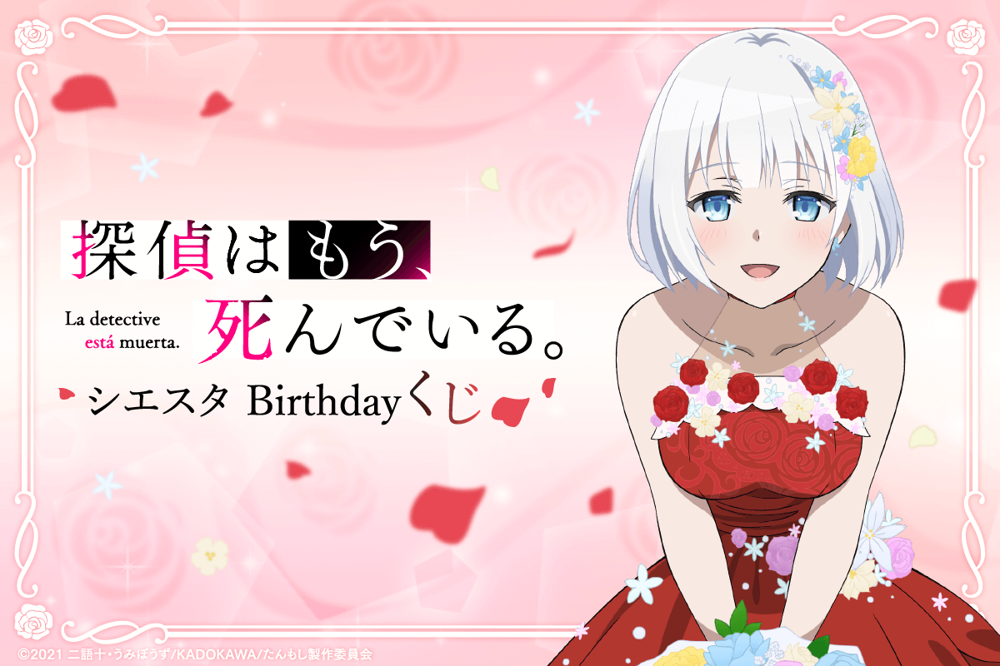
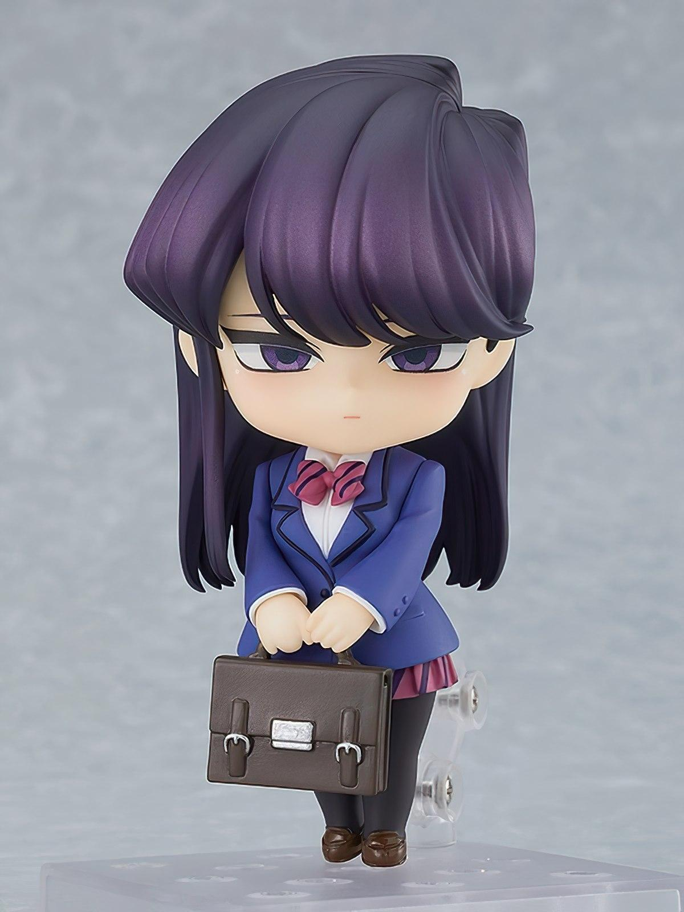

Anime News
Mercancías
Tantei wa Mou, Shindeiru celebra el cumpleaños de Siesta con una lotería
En el sitio oficial para la lotería japonesa KUJIBIKIDO se anunció una colaboración con la franquicia animada de "The Detective Is Already Dead", en la realización de un sorteo de productos que estará disponible del 31 de marzo al 21 de abril de este año en Japón. La colaboración celebra el cumpleaños de la protagonista Siesta, celebrado el 2 de abril de acuerdo con el lore de las novelas ligeras originales, e incluye una variedad de productos como premios.

Komi-san wa, Komyushou Desu: Komi inspira una adorable Nendoroid
La fabricante y distribuidora Good Smile Company anunció el lanzamiento de una figura Nendoroid basada en el personaje Shouko Komi de la franquicia de Komi-san Can’t Communicate, para el mes de octubre de 2022 en Japón. El producto tiene una altura de aproximadamente 100 mm, tendrá un precio de 5,500 yenes (45 dólares) y se encuentra disponible para la reservación en el sitio oficial del distribuidor

SPY x FAMILY inspira figuras e ilustraciones para una lotería
La lotería japonesa Ichiban Kuji anunció una colaboración con la franquicia animada basada en el manga de Tatsuya Endo, SPY x FAMILY, que inspirará un sorteo de productos disponible a partir del mes de abril de 2022 en Japón. Los boletos de participación tendrán un precio individual de 700 yenes (alrededor de 7 dólares estadounidenses) e incluye una variedad de productos que serán entregados como premios.

Seishun Buta Yarou: Las chicas visten geniales atuendos para nuevos productos
En el sitio oficial para la cadena de tiendas Don Qujiote se anunció una colaboración con la franquicia de Rascal Does Not Dream of Bunny Girl Senpai, en el lanzamiento de una línea de productos que estarán disponibles a partir del próximo 26 de marzo en Japón en distintas sucursales de la compañía.